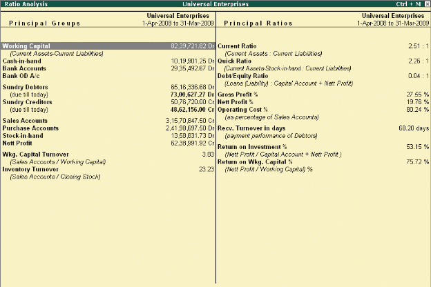

Ratio Analysis
To View Ratio Analysis Report, Ratio Analysis is an indicator on the operating performance of your business and provides information on critical ratios in a single report. You can analyze the ratios and the business performance using this information, viz., operating cost percentage, return on working capital and so on, to aid critical decisions making. Not only does the internal management find the information useful, but also external agencies like banks, financial institutions etc.
Go to Gateway of Tally > Ratio Analysis
